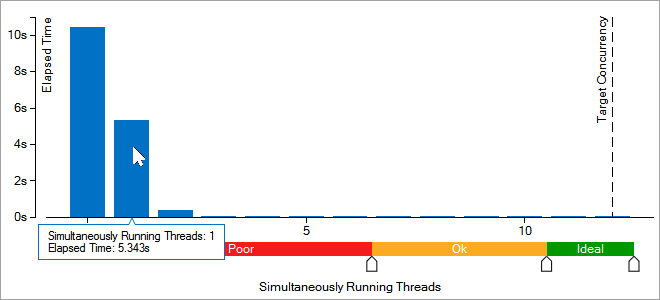
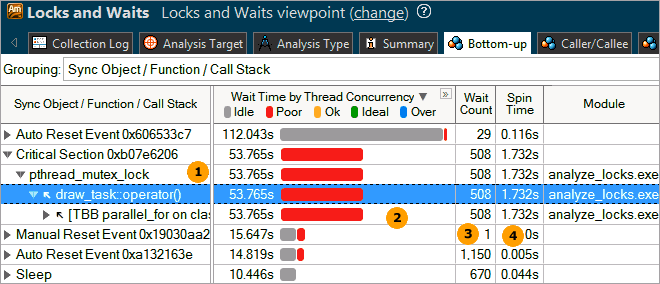

When the sample
application exits, the
Intel® VTune™ Amplifier
finalizes the results and opens the Locks and Waits viewpoint where each window
or pane is configured to display CPU time utilization of the synchronization
objects during a wait. To interpret the data on the sample code performance, do
the following:
When the sample
application exits, the
Intel® VTune™ Amplifier
finalizes the results and opens the Locks and Waits viewpoint where each window
or pane is configured to display CPU time utilization of the synchronization
objects during a wait. To interpret the data on the sample code performance, do
the following:
Analyze the basic performance metrics provided by the Locks and Waits analysis.
Note
The screen shots and execution time data provided in this tutorial are created on a system with 12 CPU cores. Your data may vary depending on the number and type of CPU cores on your system.
Analyze the Basic Locks and Waits Metrics
Start with exploring the data provided in the Summary window for the
whole application performance. To interpret the data, hover over the question
mark icons
 to read the
pop-up help and better understand what each performance metric means.
to read the
pop-up help and better understand what each performance metric means.
The Result Summary section provides data on the overall application performance per the following metrics:

1) Elapsed Time is the total time the application ran, including data allocation and calculations;
2) Wait Time occurs when software threads are waiting due to APIs that block or cause synchronization. Wait Time is calculated per thread, so the total Wait time may exceed the application Elapsed time. Expand the Wait Time metric to view a distribution per processor utilization levels. In the sample application, most of the Wait time is characterized with an ineffective processor usage;
3) Wait Count is the overall number of times the system wait API was called for the analyzed application;
4) Spin Time is the time a thread is active in a synchronization construct; the current value exceeds the threshold, so it is classified as a performance issue and highlighted in pink;
5) CPU Time is the sum of CPU time for all threads;
6) Total Thread Count is the number of threads in the application;
7) Paused Time is the amount of Elapsed time during which the analysis was paused via GUI, CLI commands, or user API.
For the analyze_locks application, the Wait time is high. To identify the cause, you need to understand how this Wait time was distributed per synchronization objects.
The Top Waiting Objects section provides the list of synchronization objects with the highest Wait Time and Wait Count, sorted by the Wait Time metric.

For the analyze_locks application, focus on the first three objects and explore the Bottom-up pane data for more details.
The Thread Concurrency Histogram represents the Elapsed time and concurrency level for the specified number of running threads. Ideally, the highest bar of your chart should be within the Ok or Ideal utilization range.

Note the Target Concurrency value. By default, this number is equal to the number of physical cores. Consider this number as your optimization goal.
For the sample code, the chart shows that analyze_locks is a multithreaded application running maximum 12 threads simultaneously on a machine with 12 cores. But it is not using available cores effectively.
Hover over the second bar to understand how long the application ran serially. The tooltip shows that the application ran one thread for almost 5.343 seconds, which is classified as Poor concurrency.
The CPU Usage Histogram represents the Elapsed time and usage level for the logical CPUs. Ideally, the highest bar of your chart should be within the Ok or Ideal utilization range.

The analyze_locks application was either idle or ran on one logical CPU. If you hover over the second bar, you see that it spent 3.547 seconds using one core only, which is classified by the VTune Amplifier as a Poor utilization. To understand what prevented the application from using all available logical CPUs effectively, explore the Bottom-up pane.
Identify Locks
Click the Bottom-up tab to open the Bottom-up pane.

|
Synchronization objects that control threads in the application. The hash (unique number) appended to some names of the objects identify the stack creating this synchronization object. For Intel® Threading Building Blocks (Intel® TBB), VTune Amplifier is able to recognize all types of Intel TBB objects. To exclude Intel TBB internals and focus only on the user code, you may switch to the Only user functions call stack mode in the filter bar. |
|
The
utilization of the processor time when a given thread waited for some event to
occur. By default, the synchronization objects are sorted by
Wait Time
by Thread Concurrency. Bars showing OK or Ideal level (orange and green)
show effective thread concurrency for existing number of cores. You should
focus your optimization efforts on functions with the longest poor concurrency
(red
|
|
Number of times the corresponding system wait API was called. For a lock, it is the number of times the lock was contended and caused a wait. Usually you are recommended to focus your tuning efforts on the waits with both high Wait Time and Wait Count values, especially if they have poor utilization. |
|
Wait time, during which the CPU is busy. This often occurs when a synchronization API causes the CPU to poll while the software thread is waiting. Some Spin time may be preferable to the alternative of the increased thread context switches. However, too much Spin time can reflect lost opportunity for productive work. |
 bars if the bar format is
selected). Next, search for the longest over-utilized time (blue
bars if the bar format is
selected). Next, search for the longest over-utilized time (blue
For
the analyzed sample code, you see that the
second object caused the longest
Wait Time with Poor thread concurrency
. The red bar in the
Wait Time by Thread
Concurrency column indicates that most of the time for this object
processor cores were underutilized. It is a
Critical Section that shows much
serial time and is causing a wait. Click the arrow sign
 at the object name to expand the
node and see the
draw_task wait function
that contains this
critical section and call stack.
Double-click this wait function to see the source code.
at the object name to expand the
node and see the
draw_task wait function
that contains this
critical section and call stack.
Double-click this wait function to see the source code.